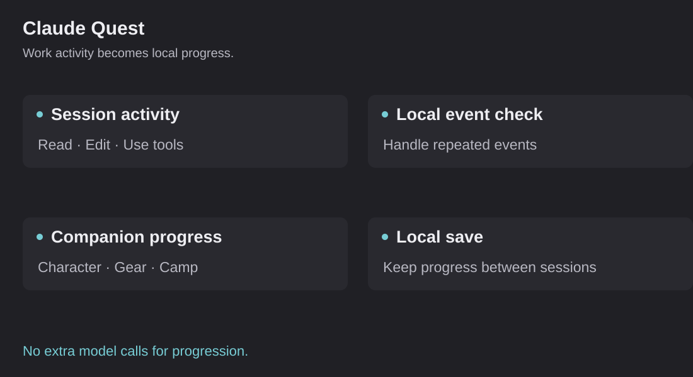

Claude Quest: make long work sessions more enjoyable
An early-access companion for Claude Code. The public version reviewed here is 0.1.0.

Claude Quest adds a small character to a Claude Code session. Work activity fuels its progress, while background camp activities continue locally. It is a playful project, but the product questions are serious: how can an extension be enjoyable without getting in the way or adding unnecessary cost?
Build around work that is already happening
The extension reacts to local session activity, such as reading, editing, using agents and committing. It turns those events into progress. The companion does not need to call a model to invent the next move.
The reviewed version includes character progression, classes, equipment, a map and camp activities. Its presentation uses CSS and SVG animation. The design keeps the game beside the work rather than requiring a second conversation to maintain it.
The companion’s progression runs locally and adds no model calls. That keeps its ongoing behavior independent of the cost of the work session.
Make it quiet enough to live with
An extension above a prompt can become annoying quickly. It takes space from the task and can redraw more often than it needs to. The implementation aims to redraw at appropriate task events and keep the local state small.
The product judgment is deciding which part of the experience earns its space. Progress should be visible, the character should be pleasant and the work should stay readable. More animation is not automatically a better extension.
Handle repeated events and multiple sessions
Local activity can arrive more than once or from several sessions. If every copy of an event earns another reward, the extension's progress stops reflecting the work. Multiple sessions can also compete to update the same save.
The reviewed design uses a leader-and-follower approach for sessions and local save handling. That is ordinary software reliability applied to a small experience. It matters because someone should be able to open another session without breaking their progress.
The save is local. The reviewed documentation describes a small state file and no external progression service. Privacy and clear ownership of local state are part of keeping the extension lightweight.
Make it enjoyable without interrupting the work
I have worked on the feel of the companion, the progression and the implementation around it. A good experience needs more than an attractive character. It needs sensible behavior when a session ends, a save is restored or several sessions are open.
The questions include when to award progress, how to avoid duplicate work, what to preserve in a save and how much activity to show. Those decisions are small enough to inspect and important enough to affect whether someone keeps using it.
My contribution
I supply the product direction and work hands-on with AI on the design and build. I review whether the behavior is clear, enjoyable and appropriate for the work environment. I also care about the overhead and reliability of the extension, not just the visual idea.
I want the character to be fun to have around, without adding another thing to manage during a work session.
Explore the project
The public early-access repository includes the README and source. A reviewer can explore the session hooks, progression and local-state design directly.
The companion keeps progression local, with a small save file and no external progression service.
I use AI to build the idea, then keep working on whether it feels good to use. For the business version of that approach, see the marketing workspace and the ad-launch mapper.